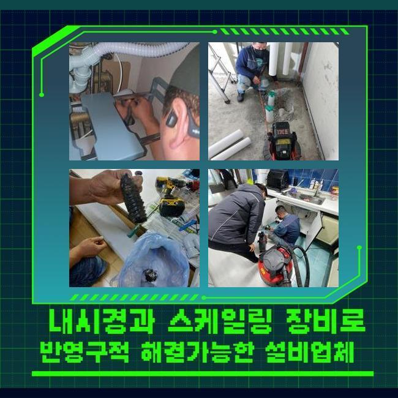
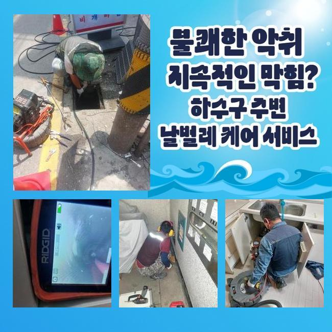
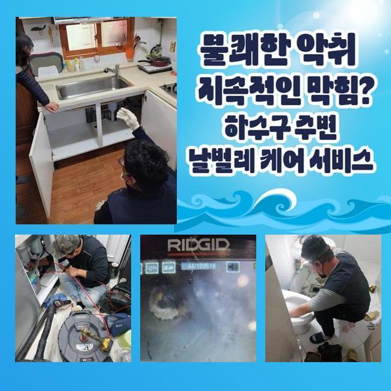
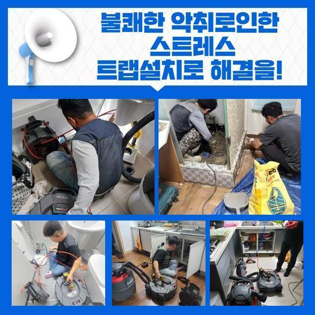
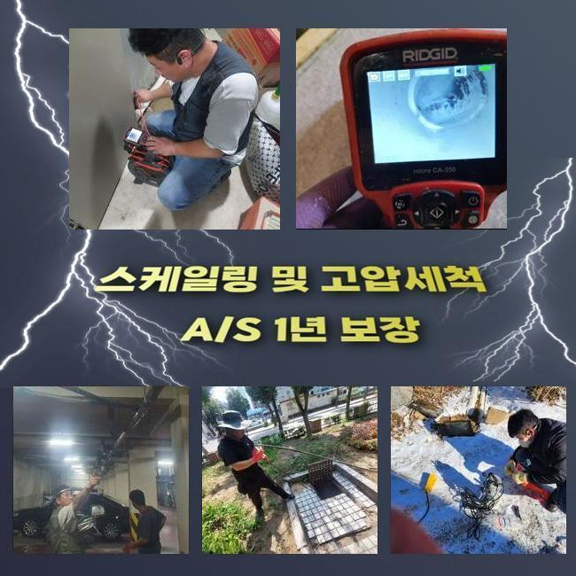
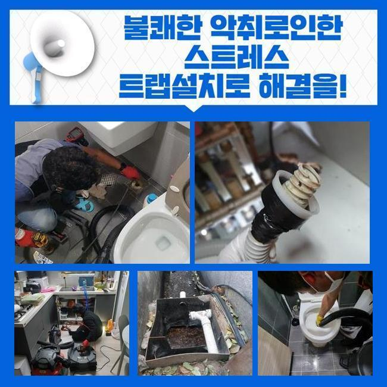

🏠 구로구 가리봉동세탁기배수구막힘 오류동 횡주관청소 배관막힘누수
용인 하수구막힘 전문 시공 후기

📋 작업 개요
- 위치: 용인
- 서비스 유형: 하수구막힘, 배관막힘, 맨홀막힘, 누수수리, 역류해결, 뚫는업체, 배관청소, 고압세척, 설비공사
- 작업 일시: 2024. 10. 30. 12:11
- 업체명: 하수구수사대 (010-5615-2118)
🔍 문제 상황
구로구 가리봉동세탁기배수구막힘 오류동 횡주관청소 배관막힘누수
평범한 생활 속에서 문제없이 수자원을 이용하는게 당연하지만 이는 엄청 중요합니다
잠깐이라도 맑은물을 사용하지 못하는 사태가 일어났다면 엄청나게 힘이 드시겠죠
어제 저녁 저희 전문진에게 의뢰주신 사례자님은 초등학교에서 일하시는 사무팀 담당자였어요
건물 내부의 배수구가 문제가 있어서 지속적으로 역류했고 시간이 지나며 고약한 냄새까지 올라와서 최대한 빨리 해결을 해달라고 요청하셨습니다
현장상태를 실제로 보고 진단 해야하므로 아침 일찍이 시간약속을 잡은 이후에 전문진들이 학교로 이동했습니다
전문 기술자들이 고객분인 알려주신 현장을 방문했고 문제가 있다는 맨홀뚜껑을 열어 들여다 봤더니 배수라인의 하수가 범람하는 것을 파악했습니다
전체적인 하수시설과 야외 세면장도 통수가 비정상적이였으며, 일부는 동일한 역류증상이 보여졌습니다
담당자분이 막힘문제가 일어난 배관을 해결하는 비용이 얼만지 물어보시길래 현재까지 파악한 내용과 금액을 자세히 말씀 드렸어요

🔎 원인 분석
💡 전문가 진단: 정밀 진단 장비를 사용하여 슬러지의 고착 여부를 판명하고 타격/세척 작업을 실시했습니다.
배수구가 막힌 상황에서 여하한 방식들로 진행이 되는건지 사례자님께서 쉽게 이해하실 수 있도록 안내를 드린이후 적재적소에 알맞은 장비들로 시공을 이어나갔어요
맨처음 순서로는 맨홀쪽에서 작업을 시작해야 했으므로 출입을 통제하는 안전주의 표시판 등 대비를 해두고 호스관을 이용하여 악취가 진동하는 오염수를 완전히 빼냈습니다
다음 작업으로 문제를 발생시키는 이유와 구조를 찾아보기 시작했어요
가지배관에 급수하는 배수관을 뚫어내도 해결할 수 없다는걸 예상하고 교차하는 배수관이 전체적으로 연결되는 메인배관의 수리를 먼저 진행하는 방향으로 결정했어요
시공을 하기전에 고객분께 지금 내용과 빠짐없이 하수설비 청소작업의 가격대를 설명드리고 진행했습니다
저희는 고객분의 불편함을 최대한 단시간에 처리하고자 최선을 다하는 마음으로 정비를 마치고 즉시 시공에 들어갔습니다
일단 하수관 역류를 발생시키는 원인과 내부 상황을 파악하기 위해서 내시경노즐을 집어넣어 배수관의 문제부위를 모니터 했습니다
본격적인 하수설비 세정을 진행하는 것에 앞서서 내시경선을 집어넣고 실제 상황을 확인 해보니 중심관이 어마 어마한 크기의 슬러지 덩어리로 막혀버려 물이 흐르지 못하고 있었습니다
의뢰인께 확인을 부탁 드린후에 서둘러 전문기계를 준비시켜 배수구를 뚫어내기로 했어요

🔧 작업 과정
오늘같은 대형 건물의 막힘사고시 일반적인 가정집의 배수구 안쪽 면으로 진행하는 흡입배출 과정을 실시한다고 해도 메인배관을 수리하는게 아주 어려운 일입니다
플랙스샤프트로 배수라인의 이물질을 단순하게 흡입 및 배출시키는 과정이 아닌 고압의 세척과정을 통해서 배수라인 청소를 시행하는게 더 나을 것 같다고 설명 드렸습니다
이러한 문제가 생겼을때 해결하는 수리비를 문의하시는 고객님이 많지만 샤프트기기로 해결 되는지 고압세척기를 이용해야 하는지에 달려있기 때문에 금액 또한 매우 차이납니다
초반에 알아보신다면 플랙스샤프트기로해결되는 가능성들이 높기때문에 비용이나 작업에 드는 시간을 줄일 수 있어요
일반적인 가정집에선 하수구 뚫어내는 작업에 드는 비용적인 부분을 아까워 하셔서 영상등을 참고하여 셀프방식으로 진행하시는 분이 많이 계시죠
역류의 이유를 파악해서 해결하지 못하신다면 하수라인이 지속해서 막히게 되므로 피해가 누적되면서 문제의 심각성이 더해집니다
이러한 이유들로 쌓여있던 오염물질이 하수배관 속에 층을이뤄 위치 해있는 경우엔 고압력의 기기를 이용해 배수관을 청소합니다
내시경기계로 문제점을 확인하고 고압으로 세척하여 중심배관까지 꽉차있던 슬러지와 노폐물을 완벽하게 해결했어요
카메라를 확인하니 이물질들이 완전히 청소되며 배수관의 안쪽 면이 넓게 트여졌어요
고압의 세정기기를 활용하여 작업자가 시공을 계속하니 배수관에서 오염된 하수가 나오기 시작하면서 파쇄된 불순물이 계속해서 나왔어요
하수관을 뚫을 때에는 시간이 오래 걸리더라도 깨끗한물이 나올때까지 청소를 계속합니다
강한 압력으로 소량씩 침전물이 배출 되는것을 직접 보면서 안전을 우선으로 진행을 이어나갔습니다
학교처럼 넓은 범위의 시설은 중심관도 당연히 클 수 밖에 없기에 일정한 주기로 사전점검을 하는게 안전한 방법이 되겠죠
하수구 뚫어내는 작업에 드는 비용적인 부분을 아까워 하셔서 수리를 미루신다면 작은 공사로 해결되는 문제도 고압 장비를 사용하는 세척작업으로 이어지며 큰부담이 됩니다
세척작업이 끝나고 내시경모니터를 통해 최종 검사를 하고 미처 나가지 못하고 달라붙어있는 불순물을 진행을 이어나갔습니다


✅ 작업 완료
모든 고압청소를 끝내면서 순환의 정상속도를 체크하고 실사용에 조금이라도 문제되는 부분이 있는지 확인했어요
통수검사 결과 가장 큰 문제였던 메인의 배수관에 역류현상 또는 다른 문제는 없었으며 학생화장실을 비롯한 급식실의 하수구까지 모두 정상적으로 순환되는 것을 체크했습니다
저희 전문가는 어떤 상황이라도 최선을 다해서 문제를 해결하겠습니다
여러분의 일상 생활이 쾌적하시길 바라면서 필요한 일이 생기셨을때 편하게 연락 해주시면 정성껏 문제해결을 도와드릴게요



⚠️ 베란다 누수 및 방수 관리 방법
- ✅ 비가 많이 올 때 창틀 주변이나 아래층 천장에 얼룩이 생기는지 정기적으로 확인해 보세요.
- ✅ 우수관 주변 실리콘 마감이 들뜨거나 깨진 틈새가 있는지 손상 여부를 수시로 체크하세요.
- ✅ 베란다 바닥 타일의 줄눈(메지)이 소실되면 그 틈으로 물이 침투하여 누수가 유발됩니다.
- ✅ 누수 의심 증상 발견 시 방치하면 아래층 손실이 커지므로 즉시 전문가의 진단을 받으십시오.
💡 핵심 정리
- 확실한 장비 작업(내시경 점검 및 샤프트 스케일링)으로 원인을 뿌리 뽑습니다.
- 작업 후 1년 이내에 동일한 부위 재발 시 100% 무상 A/S 서비스를 보장합니다.
- 서울 · 경기 · 인천 전 지역에 24시간 언제든 긴급 출동할 수 있도록 항시 대기 중입니다.
❓ 자주 묻는 질문 (FAQ)
🚨 용인 하수구막힘 문제로 고민이신가요?
정확한 원인 진단과 확실한 시공으로 재발 없는 해결을 약속드립니다.
24시간 긴급 출동 | 서울 · 경기 · 인천 전지역 | 1년 내 재발 시 무상 A/S